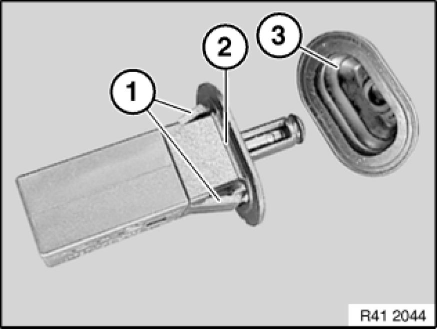

Replacing Cover Bowl
41 63 003 - Replacing cover bowl

Necessary preliminary tasks:
- Remove flap for fuel filler neck [1][2]41 63 000 Removing and Installing Flap For Fuel Filler Neck
- Remove servodrive for tank filler flap Removing and Installing/Replacing Servodrive for Tank Filler Flap
Turn cover (1) through approx. 45° and lever out in direction of arrow.
Remove rubber pad (3).
Press retaining strap (1) inwards and remove.
Remove cover (2).
Lever out seal (4) inwards.
Insert a suitable tool through bores (3) and release catches.
Installation:
Make sure seal (4) is correctly seated.
Important!
If seal (4) has been removed, it must be turned inside out.

Installation:
Catches (1) on ejector (2) must not be damaged.
Check protective cap (3) for correct seating.
Installation:
Locks (1) on left/right of cover (2) must not be damaged.
Close flap (1).
Twist cover bowl (2) in direction of arrow out of side panel and remove.
Installation:
Following parts on cover bowl (6) must not be damaged or missing:
1 - Rubber pad
2 - Catches, top/bottom
3 - Spring
4 - Catch
5 - Guide